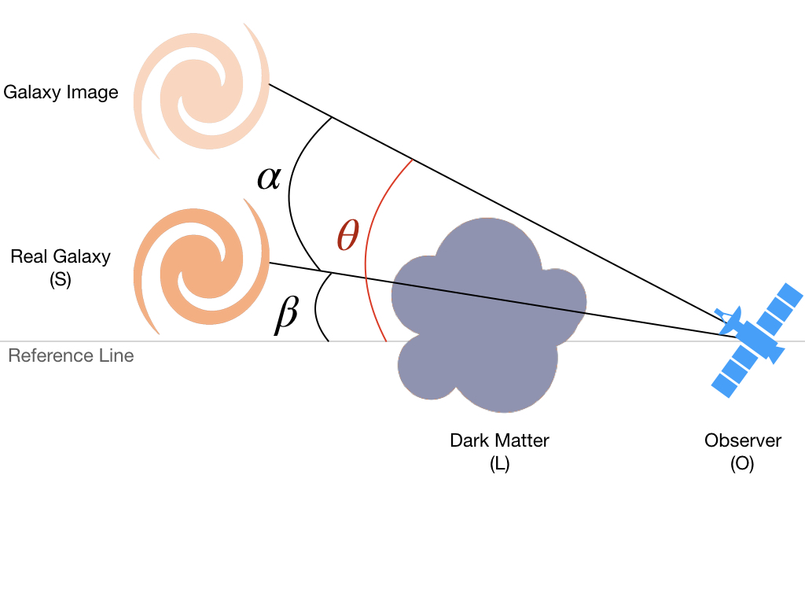

3. Weak Lensing¶
A quick note on how the reduced shear is defined in Weak Lensing.

In the scheme above, let \(\Sigma\) be the surface mass density of the Dark Matter (L) then its lensing potential is given by:
where \(G\) and \(c\) are the gravitational constant and the speed of light in vacuum and \(D_{l}\), \(D_{s}\) and \(D_{l,s}\) are the angular diameter distances between the observer and the lens (OL), the observer and the source (OS) and the lens and the source (LS), respectively.
The deflection of the light rays is approximated well enough by the angle
This angle is related to the angular positions of the source \(\beta\) to the image \(\theta\) on the sky by the lens equation:
Under weak lensing assumptions (lens mapping almost constant along the solid angle of the soucre), the lens mapping is locally linear and the Jacobian matrix of the image distorsion is:
with the convergence
and the two components
of the complex shear \(\gamma = \gamma_1 + \boldsymbol{i} \gamma_2\).
In the KSB method, the reduced shear is the measure of image distorsions and is defined as: